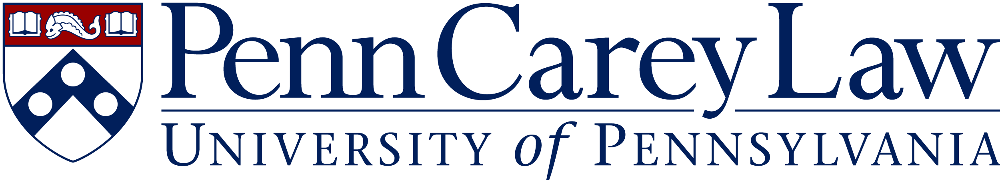

The Penn MEDIATED Research Grant Program funds interdisciplinary research on the information ecosystem and its impact on democracy, catalyzing collaboration among scholars across Penn’s schools and centers. Review this page to learn more about past and current requests for proposals (RFPs).
The Penn Center on Media, Technology, and Democracy
The 2026-2027 Penn MEDIATED Grants RFP seeks proposals from the Penn academic community for data-driven and computational research of the information ecosystem and its effects on democracy. Penn MEDIATED intends to invest in projects that deploy research tools for broader public impact, including building durable data pipelines, deploying visualization dashboards, developing analytical tools, and producing routine data-driven analyses. This request for proposals (RFP) invites applications for two distinct categories of grants:
Research Grants of $5,000-$10,000; and
Deployment Grants of $15,000-25,000.
All grant proposals should focus on the information ecosystem (e.g., traditional mass media, digital news, podcasts, peer-to-peer conversations, elite political speech, influencers, social media, search engines, or generative AI), and its effects on democracy (such as through political speech, public deliberation, censorship, polarization, civic participation, voting, or elections). For a list of previously funded grants, please refer to the Penn MEDIATED Grants in AY2025-2026.
Grant proposals must be aligned with the RFP’s scope to be considered. Grant proposals will be evaluated by the quality of the proposed work, including the value of the research. Further, the proposals will be evaluated by their prioritization of public impact, such that the research and deployment activities of the proposal have a direct and explicit relationship to improving the information ecosystem and supporting democracy. We also encourage interdisciplinary collaboration, especially applications involving researchers from several schools affiliated with Penn MEDIATED.
Research grants are intended to support projects using data and/or computational methods to advance the scientific understanding of the information ecosystem and its interactions with democracy. Application of new and emerging empirical methods, gathering and sharing new data sources, and the development of new open-source software, is encouraged but not required. We further encourage the prioritization of impact, such that the research and other activities of the proposal have a direct and explicit relationship to improving the information ecosystem and supporting democracy.
Deployment grants are intended to support developing and launching public-facing data systems or tools that broadly inform the public, journalists, civil society, policymakers, and industry on the state of, and challenges to, the U.S. information ecosystem, and to expand the reach and impact of empirical research conducted at Penn. This may include developing durable and continuous data pipelines that produce datasets usable by the broader community; continuously updated dashboards and data visualizations that directly inform the broader public; analytical tools that expand the ability of others to learn from key datasets; and routinized data analysis products, indices, or reports that produce repeated snapshots of some aspect of the information ecosystem. Proposed projects and data systems may also support the applicant’s own research, however the majority of the funding should be for developing and deploying these data products.
Special Opportunity on Tools and Research for FactChecking with FactCheck.Org. We are funding up to two special projects for up to $25,000 each to develop tools and research on factchecking, working collaboratively with the Annenberg Public Policy Center’s FactCheck.Org. Please see this document detailing this special grant opportunity.
Proposals for the 2026 MEDIATED Research Grants should be submitted as a PDF document which includes the following:
A Proposal Abstract (200-300 words).
A Project Description (500-1,000 words), including the research questions; justification of this research; and a description of the research methodology. Deployment grant proposals should provide significant detail about the data collection, technical infrastructure, data analysis, and specific data products resulting from the project.
A Public Impact Plan (500 words), which specifies a non-academic audience (e.g. the public, policymakers, journalists, industry) for the research or deployment project and describes why this research or data product is valuable for that audience. The plan should discuss specific deliverables that the project will accomplish in order to engage with these audiences.
A Budget detailing projected costs and the total funding requested. The proposal must also mention any other sources of financial support.
A Timeline of key project milestones and completion.
Please submit your grant proposal using InfoReady: [To Be Added]
Please also consider the following guidelines:
Faculty, postdoctoral students, PhD students, research staff, and affiliated scholars from these six Center-affiliated schools are eligible to apply (please note that non-faculty who apply, such as postdoctoral scholars and PhD students, must identify a faculty collaborator or mentor):
The typical grant length will be between 9 to 18 months, starting on March 1, 2027, although longer and shorter grants may be considered. Unspent funds after the proposed grant period will be reclaimed by Penn MEDIATED, unless an extension is granted.
Funding support will typically not cover researcher salaries, but may support data purchasing, data collection, data annotation, purchasing hardware and/or software, software engineering or deployment expenses, cloud computing, research assistants, behavioral experiments, and impact-oriented activities, such as events and dissemination.
Projects that are selected for funding must provide recognition of the “Penn MEDIATED Research Grants” on all publications, conference presentations, and may be asked to promote the research in coordination with the Penn MEDIATED.
Please reach out to Prithvi Iyer (piyer@upenn.edu), Communications and Research Manager, Penn MEDIATED, with any questions.
The University of Pennsylvania’s Center on Media, Technology, and Democracy is committed to equal opportunity and nondiscrimination practices across its programs and encourages diverse applicants and diverse teams of all backgrounds––including but not limited to minorities and women––to apply for posted opportunities. All qualified applicants and applications will receive consideration without discrimination based on race, color, sex, sexual orientation, religion, creed, national origin (including shared ancestry or ethnic characteristics), citizenship status, age, disability, veteran status, or any other class protected under applicable federal, state or local law. The University of Pennsylvania’s Equal Opportunity Policy is overseen by the Office of Equal Opportunity Programs, in collaboration with the Division of Human Resources and the Office of the Provost. Questions, complaints of alleged discrimination, or concerns regarding these policies or their implementation may be directed to the Executive Director, Office of Equal Opportunity Programs, Franklin Building, Suite 421, 3451 Walnut Street, Philadelphia, PA 19104-6205, (215) 898-6993 or Fax (215) 746-7088.
Focus on the information ecosystem (such as traditional mass media, digital news, podcasters, influencers, social media, search engines, or generative AI), and its effects on democracy (such as through political speech, censorship, polarization, civic participation, voting and elections).
Use of empirical research, using data and computational methods to advance the scientific understanding of the information ecosystem and its interactions with democracy. New empirical methods, data sources, and open-source software are encouraged but not required.
Prioritization of impact, such that the research has a direct and explicit relationship to improving the information ecosystem and supporting democracy.
We also encourage interdisciplinarity, dissemination activities, and community building, and welcome proposals that engage with the Center on Media, Technology and Democracy to advance these secondary goals:
Especially applications involving collaboration from researchers across several affiliated Penn schools.
Including tool building and deployment, articles, op-eds, blog posts, data visualizations, public events, and conference presentations.
Bringing together empirical scholars of the information ecosystem from across Penn and the broader academic community.
Faculty, postdoctoral students, PhD students, research staff, and affiliated scholars from these Center-affiliated schools are eligible to apply (collaborators need not all be affiliated). Non-faculty applicants must identify a faculty collaborator or mentor:

Typically $7,500–$15,000; larger amounts may be considered for projects involving multiple Penn-affiliated researchers.
Typically 12–15 months, starting on January 1, 2026, although longer and shorter grants may be considered. Unspent funds after the proposed grant period will be reclaimed by the Center, unless an extension is granted.
Funding support will typically not cover researcher salaries, but may support data purchasing, data collection, data annotation, hardware and/or software, engineering or deployment expenses, cloud computing, research assistants, behavioral experiments, and impact-oriented activities.
Funded projects must provide recognition of the Penn MEDIATED Research Grant program on all publications and conference presentations, and may be asked to promote the research in coordination with the Center.
A 200–300 word proposal abstract.
A 500–1,000 word description of the proposed research, including research questions and methodology.
A 300–500 word statement on the impact of the proposed work on the information ecosystem and democracy.
A budget detailing projected costs, total funding requested, and any other funding sources.
A timeline of key project milestones and completion.